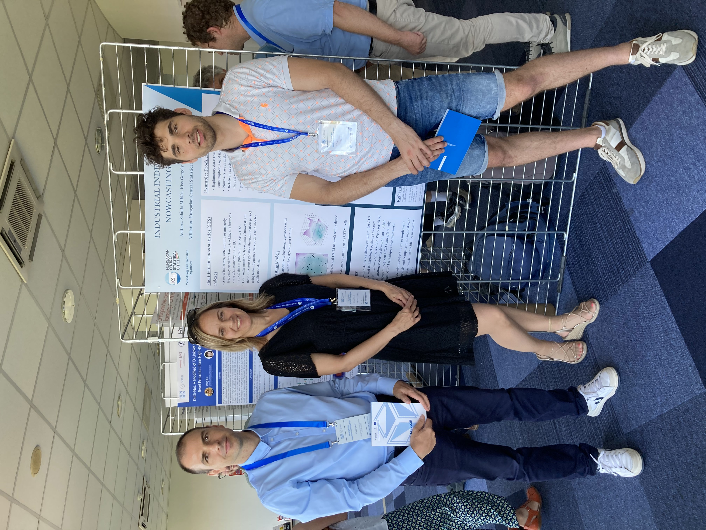

I regularly engage with the professional machine learning community through conferences and events. This includes participation in the Hungarian Machine Learning Days, where recent developments in AI and data science are presented and discussed across academia and industry.

In front of our ML nowcast poster.
View event programmeThis engagement supports continuous professional development and helps align practical applications with current research trends in machine learning.